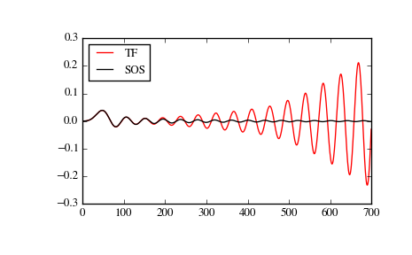

scipy.signal.sosfilt¶
- scipy.signal.sosfilt(sos, x, axis=-1, zi=None)[source]¶
Filter data along one dimension using cascaded second-order sections
Filter a data sequence, x, using a digital IIR filter defined by sos. This is implemented by performing lfilter for each second-order section. See lfilter for details.
Parameters: sos : array_like
Array of second-order filter coefficients, must have shape (n_sections, 6). Each row corresponds to a second-order section, with the first three columns providing the numerator coefficients and the last three providing the denominator coefficients.
x : array_like
An N-dimensional input array.
axis : int, optional
The axis of the input data array along which to apply the linear filter. The filter is applied to each subarray along this axis. Default is -1.
zi : array_like, optional
Initial conditions for the cascaded filter delays. It is a (at least 2D) vector of shape (n_sections, ..., 2, ...), where ..., 2, ... denotes the shape of x, but with x.shape[axis] replaced by 2. If zi is None or is not given then initial rest (i.e. all zeros) is assumed. Note that these initial conditions are not the same as the initial conditions given by lfiltic or lfilter_zi.
Returns: y : ndarray
The output of the digital filter.
zf : ndarray, optional
If zi is None, this is not returned, otherwise, zf holds the final filter delay values.
See also
Notes
The filter function is implemented as a series of second-order filters with direct-form II transposed structure. It is designed to minimize numerical precision errors for high-order filters.
New in version 0.16.0.
Examples
Plot a 13th-order filter’s impulse response using both lfilter and sosfilt, showing the instability that results from trying to do a 13th-order filter in a single stage (the numerical error pushes some poles outside of the unit circle):
>>> import matplotlib.pyplot as plt >>> from scipy import signal >>> b, a = signal.ellip(13, 0.009, 80, 0.05, output='ba') >>> sos = signal.ellip(13, 0.009, 80, 0.05, output='sos') >>> x = np.zeros(700) >>> x[0] = 1. >>> y_tf = signal.lfilter(b, a, x) >>> y_sos = signal.sosfilt(sos, x) >>> plt.plot(y_tf, 'r', label='TF') >>> plt.plot(y_sos, 'k', label='SOS') >>> plt.legend(loc='best') >>> plt.show()
